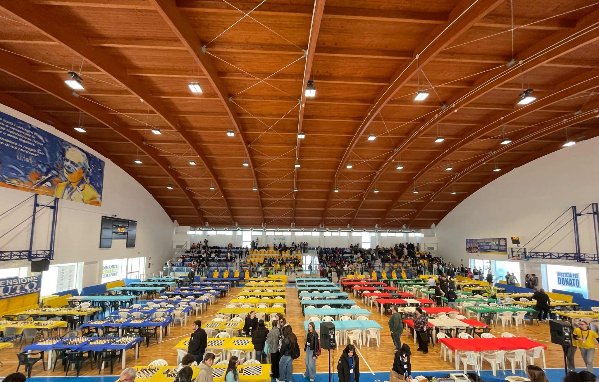
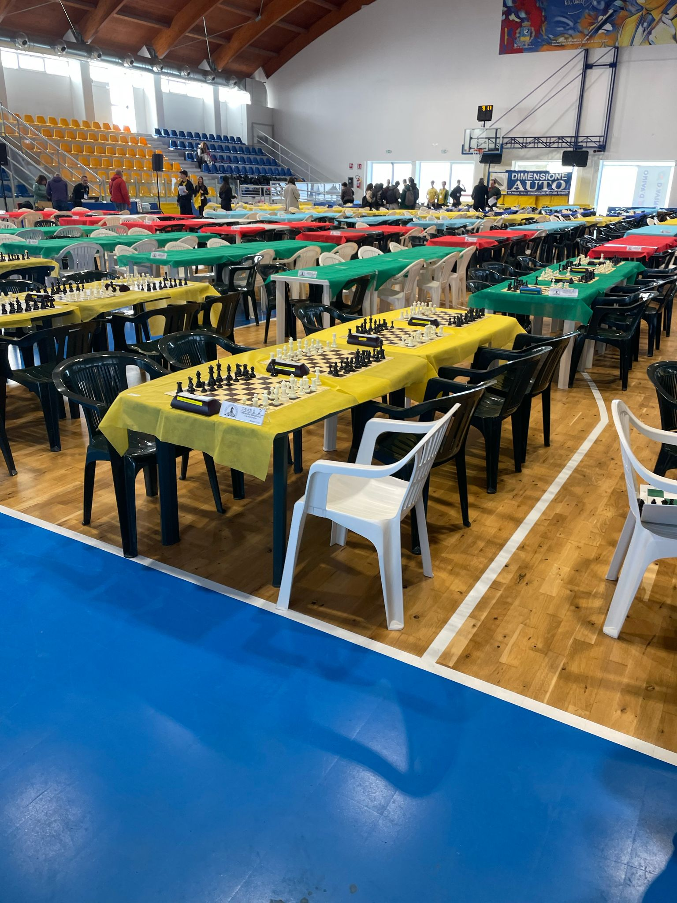
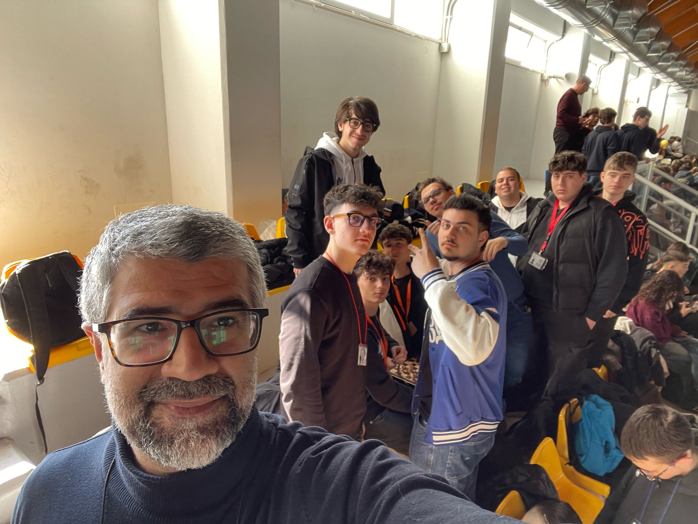

April 5, 2025 – My Official Debut on the Chessboard
April 5, 2025, will remain etched on my personal game board as the opening move of a brand-new journey: my very first chess tournament. Having only recently returned to the royal game, I had the honor of taking part in the Regional Student Championships in Cerignola.
The journey to the tournament venue felt like a joyful opening gambit, shared with my teammates amid laughter and the kind of quiet tension masked by smiles and stories. Upon arrival, the arena welcomed us like a living chessboard, teeming with young minds ready to do battle across the 64 squares of well-worn wood.
During the pre-tournament warm-ups, a few friendly matches acted as a sort of mental castling, easing nerves and preparing the mind for the imminent struggle. Although I was designated as the first reserve, I never felt like a secondary pawn: I was prepared to play each game with the unwavering resolve of a bishop cutting diagonals across the board.
Among the most intense encounters was the match against Jatta Francesco, a formidable opponent with a 1st National ranking and a gentleman of the game. Ours was a highly contested positional battle, where each move was a clash of strategic visions. In the end, his experience prevailed, but I emerged from the game enriched and inspired.
Unfortunately, as often happens in uncertain endgames, our team faced an unexpected setback. A technical error – an accidental board swap between me and a teammate – cost us a critical point. What should have been a victory was downgraded to a draw, and our promotion to the Nationals in Cervia slipped away by the narrowest of margins.
Nevertheless, this first tournament was a well-played gambit: I forged new friendships, thoroughly enjoyed the experience, and above all, deepened my love for the game. Now, I look to the future with a king’s gaze — poised to enter new tournaments, sharpen my strategies, and, move by move, claim victory.
Images
|  |
|  |
|  |
 |
 |